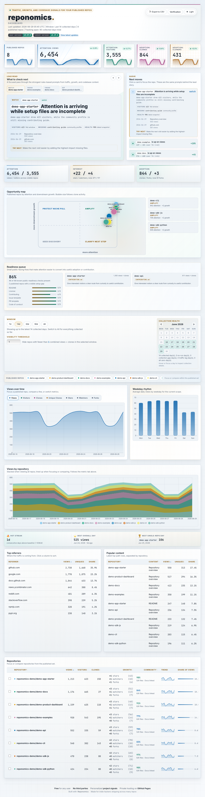
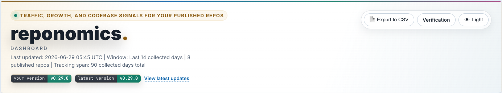
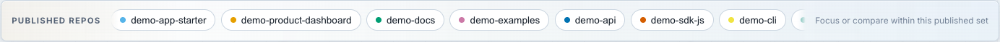
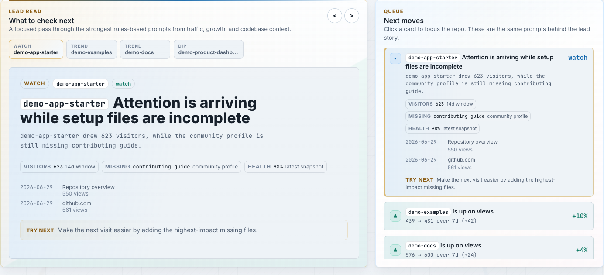
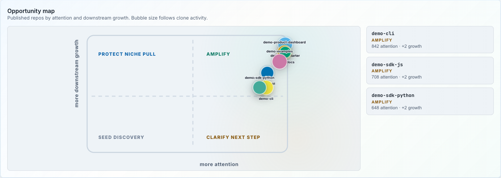
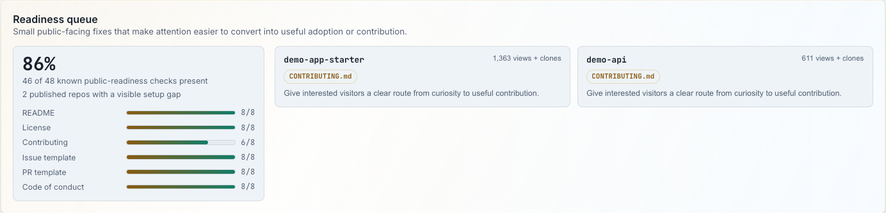
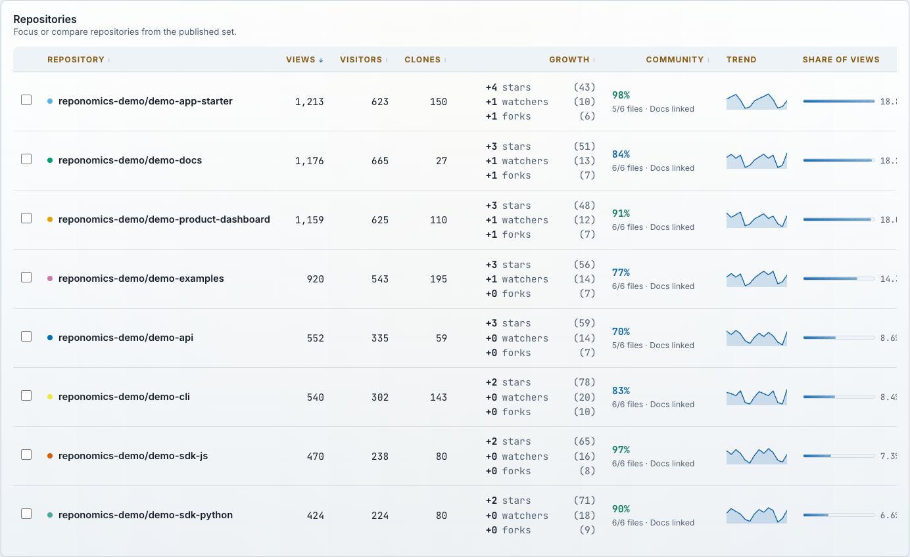

Dashboard Map
A concise visual guide to the Reponomics dashboard: what each section is for, how the lead story connects metrics to practical repo events, and what is interactive in the demo.

How the page is organized
-
1
Scope, controls, and summary
Last updated, selected window, theme/export controls, the 8 published repos premise, and the first metrics overview.
-
2
Lead story and next moves
A focused article carousel plus queue, both generated from the same rules-based prompts that connect metrics to repo context.
-
3
Opportunity map
Attention on the x-axis, downstream growth on the y-axis, and clone activity as mark size.
-
4
Code activity ribbon
Commit and release clusters sit near the traffic timeline without implying branch topology. Markers focus a repo when the cluster belongs to one repo.
-
5
Readiness queue
Community-health checks translated into practical setup fixes for the visible published repos.
-
6
Growth model
Attention, interest, and adoption cards summarize the path from visibility to downstream project response.
-
7
Repo strip and momentum
Published repo chips focus or compare the 8 selected repos; momentum summarizes streaks and notable days.
-
8
Tables
Sortable referrer, path, and repository detail surfaces for source inspection.
Scope, Controls, Summary, and Published Repos


The dashboard renders the selected publication subset, even when collection includes more repos.
Lead Story and Next Moves

The focused article creates the first read; the queue preserves the practical next-move list for scanning and repo focus.
Opportunity Map

Clustered demo data now uses smaller marks so labels and quadrants stay readable.
Code Activity Ribbon

A low-noise event layer for spotting traffic-adjacent codebase activity.
Readiness Queue

A compact path from current attention to public-facing setup improvements.
Tables and Source Inspection

Use the tables when you need the underlying rows behind a visual or prompt.